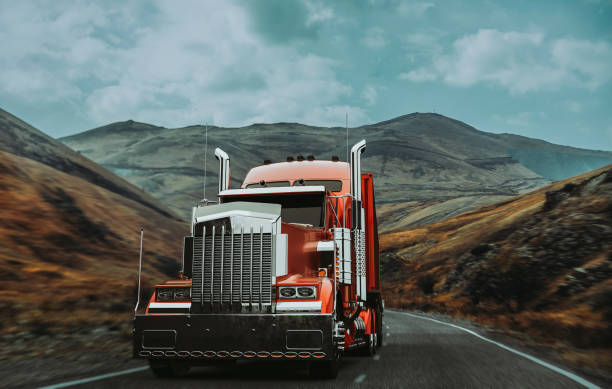

| Un camión es un vehículo motorizado diseñado para el transporte de productos y mercancías. A diferencia de los automóviles, que suelen tener una construcción monocasco, muchos camiones se construyen sobre una estructura resistente denominada chasis (bastidor). La mayor parte de la estructura está integrada por un chasis portante, generalmente un marco estructural, una cabina y una estructura (o caja) para transportar la carga. El vocablo camión se puede referir a dos vehículos diferentes: camiones rígidosNota y camiones articulados. En los «camiones rígidos» no se puede separar la caja de la cabina (donde se sitúa el tractocamión); pueden tener dos o tres ejes. Están diseñados para el transporte de carga relativamente liviana y distancias cortas o medias; generalmente, se utilizan para el transporte de cargas menores y/o frágiles. Son camiones rígidos los camiones de reparto de muebles, artículos de hogar, comestibles, área de la salud, vestuario, mudanzas, bomberos, emergencias, etcétera. Los «camiones articulados» se componen de tractocamión y semirremolque se utilizan para largas distancias y carga pesada, tanto de líquidos como material seco o a granel, como los camiones de transporte de combustible, camiones madereros, camiones para el transporte de contenedores y cajas móviles. Existen diversas clasificaciones de camiones: por su peso, por su volumen o capacidad de carga y por la función que desempeñan. Hay camiones de todo tipo y de diversos tamaños: pequeños (ordinarios), medianos (camiones todoterreno de 200 toneladas usados en minería) y extragrandes («trenes de carretera»). Los camiones se han ido especializando y adoptando una serie de características propias del trabajo al cual se destinan. Han evolucionado desde una simple caja —abierta o cerrada—, hasta formas sofisticadas con diseño y equipamientos específicos adecuados a la materia por transportar: peligrosa, líquida, refrigerada, en giro continuo que impida el fraguado, con grúa, etcétera. En el eje tras ero suelen poseer juegos dobles de ruedas, denominadas popularmente «gemelas», «pachas» en Colombia, o «morochas» en Venezuela, o también llamadas duales. |  |
|
|